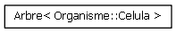
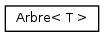
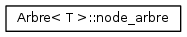
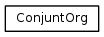
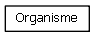
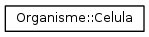
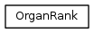
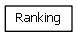
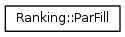

Pràctica PRO2 Reproducció al Laboratori
versió 0.2
Pàgina principal
Classes
Fitxers
Llista de Classes
Jerarquia de Classes
Membres de Classes
Tot
Classes
Fitxers
Funcions
Variables
Definicions
Pàgines
Jerarquia de Classes
Veure la jerarquia textual de la classe









Generat a Dv Abr 25 2014 15:25:32 per a Pràctica PRO2 Reproducció al Laboratori per
1.8.6
 1.8.6
1.8.6